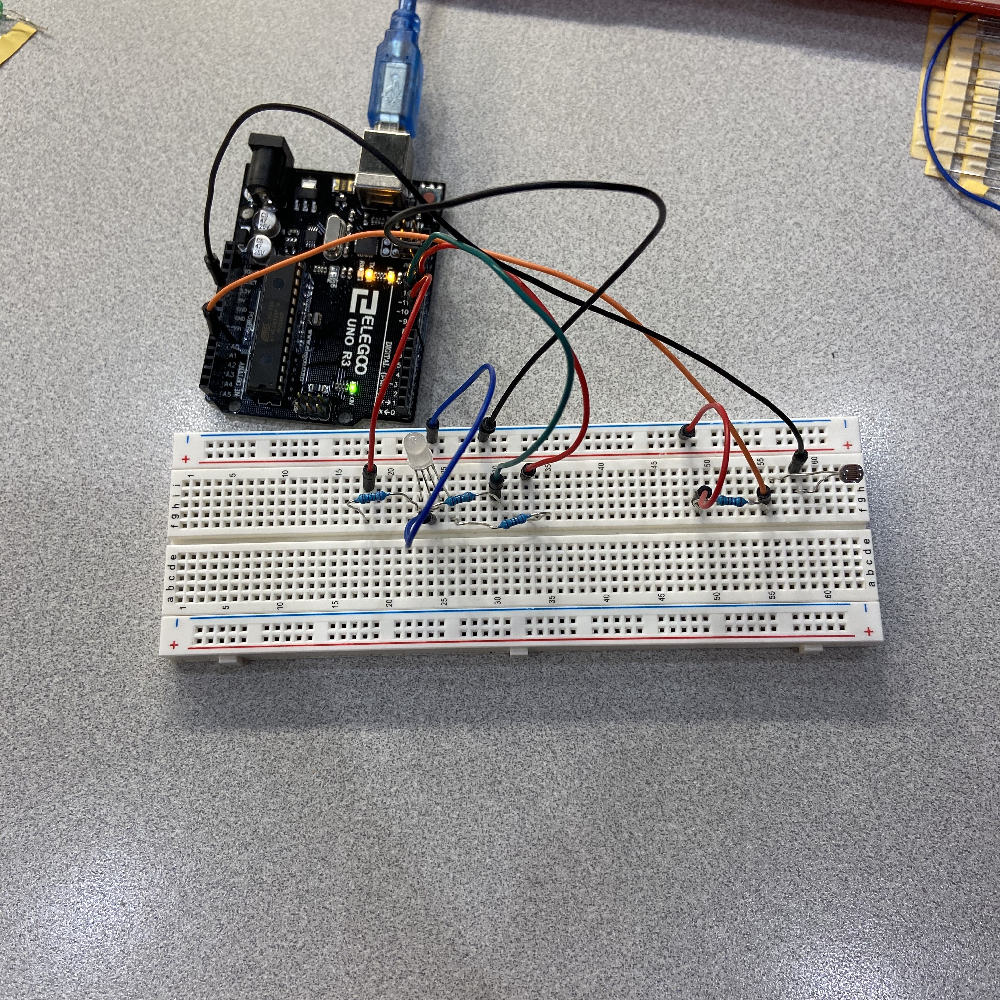

Assignment 3: Input/Output!

^A picture of the circuit.
Here is all the documentation for assignment 3!
Below is the GIF of the circuit running.

Below is an image of the schematic
Below is a snippet of the code used in Arduino.
//The code below was gotten from arduino community, slack, Kay Waller, Lia Johansen, Lily Rosencrantz. They helped me fix my
//Code and errors and allowed for my circuit to work.
// Constants don't change. They are for assigning names to the pins
const int photoResistor = A0; // Analog input pin for the photoresistor
// Constants for the RGB LED
const int redLED = 9; // pin red LED
const int greenLED = 10; // pin green LED
const int blueLED = 11; // pin blue LED
// value that will be assigned to photoresistor
// based on the analogRead (values: 0 - 1023)
int sensorValue = 0;
// value from photoresistor that will be 'remapped'
// to a new wanted range
int changedValue = 0;
void setup() {
// initialize serial communications so
// I can see my values in the serial monitor
Serial.begin(9600);
// initialize photoresistor as input
pinMode(photoResistor, INPUT);
// initalize RGB LED pins to use analogWrite()
for (int i = 9; i < 12; i++) {
pinMode(i, OUTPUT);
}
}
void loop() {
// Attain the voltage from photoResistor based on light
sensorValue = analogRead(photoResistor);
// Then translate that number with map to new a range of 0 - 255
changedValue = map(sensorValue, 240, 990, 0, 255);
// Note: Dark is around 240 and super bright is around 990 (on the scale 0 - 1023)
// value from photoresistor is small (it means it's dark)
// LED changes to lime green
if (changedValue < 60) {
// make the red LED almost full brightness
analogWrite(redLED, 200);
// make the green led full brightness
analogWrite(greenLED, 255);
// turn off blue LED
analogWrite(blueLED, 0);
}
// If the light value from photoresistor is normal brightness
// LED changes to bright, deep red
else if (changedValue >= 60 && changedValue < 170) {
// make the red LED full brightness
analogWrite(redLED, 255);
// turn off green LED
analogWrite(greenLED, 0);
// turn off blue LED
analogWrite(blueLED, 0);
}
// light value from photoresistor is high (light source is really bright)
// LED changes to a light blue
else {
// make the red LED less than half brightness
analogWrite(redLED, 77);
// make green LED almost full brightness
analogWrite(greenLED, 204);
// make blue LED full brightness
analogWrite(blueLED, 255);
}
// print the two sensor values to the Serial Monitor:
// Print the photoresistor sensor value
Serial.print("sensor value = ");
Serial.print(sensorValue);
// print a line space
Serial.println();
// print the photoresistor's value changed after the
// remapping the values to a new range
Serial.print("\t changed value after map() = ");
Serial.println(changedValue);
// delay 0.01 milliseconds before the next loop
delay(10);